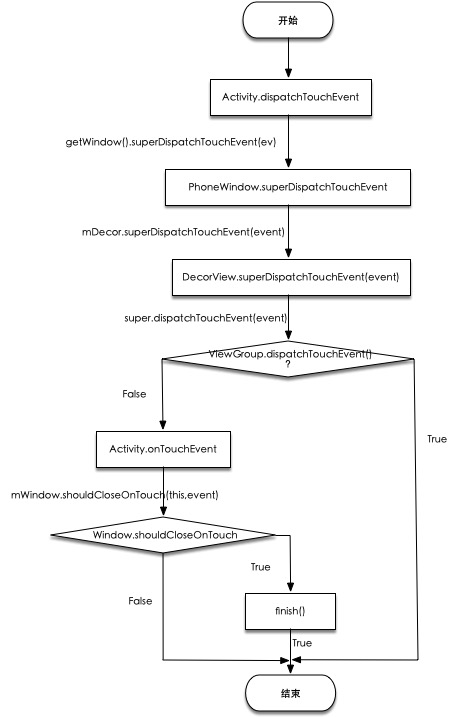
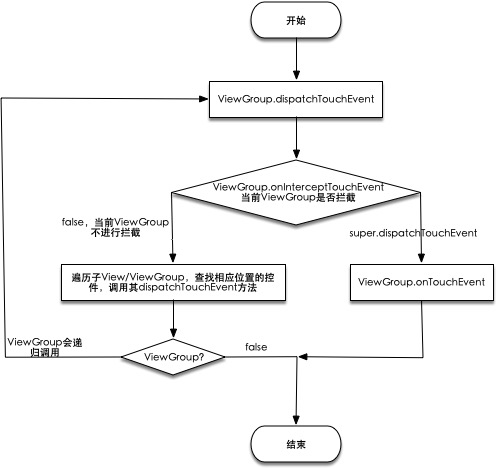
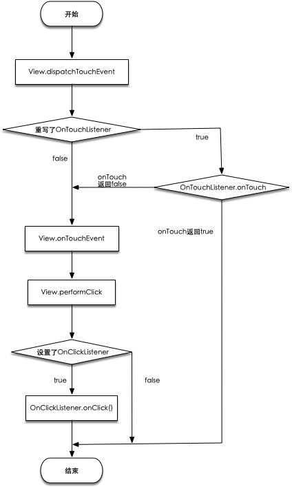
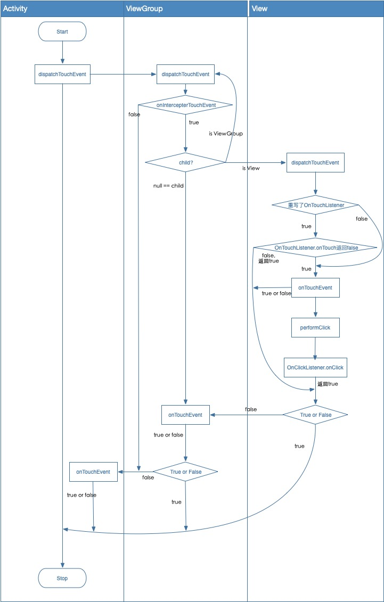

在Android事件分发流程（API-27）（1）中我们有分析到当我们在屏幕的一个点击会走到Activity.dispatchTouchEvent()，现在我们分析Actvitiy.dispatchTouchEvent()之后的流程
Activity分发流程
Activity.dispatchTouchEvent()1234567891011public boolean dispatchTouchEvent(MotionEvent ev) {if (ev.getAction() == MotionEvent.ACTION_DOWN) {// onUserInteraction是Activity的一个空方法，当有用户和设备有交互就会触发onUserInteraction();}if (getWindow().superDispatchTouchEvent(ev)) {// 调用window的superDispatchTouchEvent(), 这里的getWindow我们都知道是PhoneWindowreturn true;}return onTouchEvent(ev);}这里我们看到当
PhoneWindow返回true就会被拦截掉，dispatchTouchEvent直接返回true，而不再执行Activity.onTouchEvent()方法了PhoneWindow.superDispatchTouchEvent()12345public boolean superDispatchTouchEvent(MotionEvent event) {// 这里的mDecor我们都知道是DecorView，所以PhoneWindow直接交给了DecorView处理了return mDecor.superDispatchTouchEvent(event);}DecorView.superDispatchTouchEvent()1234public boolean superDispatchTouchEvent(MotionEvent event) {// DecorView继承的FrameLayout，FrameLayout继承ViewGroup，而FrameLayout并没有重写dispatchTouchEvent()方法，所以直接调用ViewGroup的该方法return super.dispatchTouchEvent(event);}上面的流程我们可以知道，在
getWindow().superDispatchTouchEvent(ev)的流程交给了ViewGroup处理，我们先来看看ViewGroup返回false之后的流程Activity.onTouchEvent()Activity.onTouchEvent()123456789public boolean onTouchEvent(MotionEvent event) {// mWindow是PhoneWindow，PhoneWindow继承Window这个抽象类，PhoneWindow没有重写该方法，直接看Window的该方法if (mWindow.shouldCloseOnTouch(this, event)) {finish();return true;}return false;}Window.shouldCloseOnTouch()1234567891011121314151617181920212223/** @hide */public boolean shouldCloseOnTouch(Context context, MotionEvent event) {final boolean isOutside =event.getAction() == MotionEvent.ACTION_DOWN && isOutOfBounds(context, event)|| event.getAction() == MotionEvent.ACTION_OUTSIDE;if (mCloseOnTouchOutside && peekDecorView() != null && isOutside) {// 如果是在Window的区域之外，则返回truereturn true;}// 否则返回falsereturn false;}// 这里主要是判断是否在Window的边界外private boolean isOutOfBounds(Context context, MotionEvent event) {final int x = (int) event.getX();final int y = (int) event.getY();final int slop = ViewConfiguration.get(context).getScaledWindowTouchSlop();final View decorView = getDecorView();return (x < -slop) || (y < -slop)|| (x > (decorView.getWidth()+slop))|| (y > (decorView.getHeight()+slop));}所以
Activity.onTouchEvent()主要是判断是否在Window的区域之外，如果在区域之外则finish当前Activity，并返回true，否则返回false，总之到这里Activity的dispatchTouchEvent的事件分发流程就结束了流程图

ViewGroup分发流程
上面我们分析了
Activity层的事件分发的简单流程，现在来看下ViewGroup.dispatchTouchEvent之后的流程是怎样的ViewGroup.dispatchTouchEvent里的流程较多，我们只看主要的代码123456789101112131415161718192021222324252627282930313233343536373839404142434445464748495051525354555657585960616263646566676869707172737475767778798081828384858687888990919293949596979899100101102103104105106107108109110111112113114115116117118119120121122123124125126127128129130131132133134135136137138139140141142143144145146147148149150151152153154155156157158159160161162163164165166167168169170171172173174175176177178179180181182183184185186187188189190191192193194195196197198199200201202203204205206207208209210211212213214215216217218219220221222223224225226227public boolean dispatchTouchEvent(MotionEvent ev) {if (mInputEventConsistencyVerifier != null) {// 用于调试，输入事件一致性校验，View中的InputEventConsistencyVerifier属性mInputEventConsistencyVerifier.onTouchEvent(ev, 1);}// If the event targets the accessibility focused view and this is it, start// normal event dispatch. Maybe a descendant is what will handle the click.// 处理辅助功能if (ev.isTargetAccessibilityFocus() && isAccessibilityFocusedViewOrHost()) {ev.setTargetAccessibilityFocus(false);}boolean handled = false; // 返回值，默认falseif (onFilterTouchEventForSecurity(ev)) {// 安全策略过滤final int action = ev.getAction();final int actionMasked = action & MotionEvent.ACTION_MASK;// Handle an initial down.if (actionMasked == MotionEvent.ACTION_DOWN) {// Throw away all previous state when starting a new touch gesture.// The framework may have dropped the up or cancel event for the previous gesture// due to an app switch, ANR, or some other state change.cancelAndClearTouchTargets(ev);resetTouchState();}// Check for interception.// 当前ViewGroup是否要拦截final boolean intercepted;if (actionMasked == MotionEvent.ACTION_DOWN|| mFirstTouchTarget != null) {// FLAG_DISALLOW_INTERCEPT 禁止拦截标识，可以调用requestDisallowInterceptTouchEvent(boolean disallowIntercept)禁止父ViewGroup拦截final boolean disallowIntercept = (mGroupFlags & FLAG_DISALLOW_INTERCEPT) != 0;if (!disallowIntercept) {// 1. 重点来了，调用了ViewGroup.onInterceptTouchEventintercepted = onInterceptTouchEvent(ev);ev.setAction(action); // restore action in case it was changed} else {// 不进行拦截intercepted = false;}} else {// There are no touch targets and this action is not an initial down// so this view group continues to intercept touches.intercepted = true;}// If intercepted, start normal event dispatch. Also if there is already// a view that is handling the gesture, do normal event dispatch.if (intercepted || mFirstTouchTarget != null) {ev.setTargetAccessibilityFocus(false);}// Check for cancelation.// 当前事件是否被取消final boolean canceled = resetCancelNextUpFlag(this)|| actionMasked == MotionEvent.ACTION_CANCEL;// Update list of touch targets for pointer down, if needed.final boolean split = (mGroupFlags & FLAG_SPLIT_MOTION_EVENTS) != 0;TouchTarget newTouchTarget = null;boolean alreadyDispatchedToNewTouchTarget = false;if (!canceled && !intercepted) {// 如果事件没有被取消也没有被拦截，则分发给对应的子View/ViewGroup// If the event is targeting accessiiblity focus we give it to the// view that has accessibility focus and if it does not handle it// we clear the flag and dispatch the event to all children as usual.// We are looking up the accessibility focused host to avoid keeping// state since these events are very rare.View childWithAccessibilityFocus = ev.isTargetAccessibilityFocus()? findChildWithAccessibilityFocus() : null;if (actionMasked == MotionEvent.ACTION_DOWN|| (split && actionMasked == MotionEvent.ACTION_POINTER_DOWN)|| actionMasked == MotionEvent.ACTION_HOVER_MOVE) {final int actionIndex = ev.getActionIndex(); // always 0 for downfinal int idBitsToAssign = split ? 1 << ev.getPointerId(actionIndex): TouchTarget.ALL_POINTER_IDS;// Clean up earlier touch targets for this pointer id in case they// have become out of sync.removePointersFromTouchTargets(idBitsToAssign);final int childrenCount = mChildrenCount;if (newTouchTarget == null && childrenCount != 0) {final float x = ev.getX(actionIndex);final float y = ev.getY(actionIndex);// Find a child that can receive the event.// Scan children from front to back.final ArrayList<View> preorderedList = buildTouchDispatchChildList();final boolean customOrder = preorderedList == null&& isChildrenDrawingOrderEnabled();// 遍历所有的子View/ViewGroupfinal View[] children = mChildren;for (int i = childrenCount - 1; i >= 0; i--) {final int childIndex = getAndVerifyPreorderedIndex(childrenCount, i, customOrder);final View child = getAndVerifyPreorderedView(preorderedList, children, childIndex);// If there is a view that has accessibility focus we want it// to get the event first and if not handled we will perform a// normal dispatch. We may do a double iteration but this is// safer given the timeframe.if (childWithAccessibilityFocus != null) {if (childWithAccessibilityFocus != child) {continue;}childWithAccessibilityFocus = null;i = childrenCount - 1;}// 子控件是否能够接受事件或者点击位置是否在该子控件上if (!canViewReceivePointerEvents(child)|| !isTransformedTouchPointInView(x, y, child, null)) {ev.setTargetAccessibilityFocus(false);continue;}newTouchTarget = getTouchTarget(child);if (newTouchTarget != null) {// Child is already receiving touch within its bounds.// Give it the new pointer in addition to the ones it is handling.newTouchTarget.pointerIdBits |= idBitsToAssign;break;}resetCancelNextUpFlag(child);// 调用子控件进行分发 dispatchTransformedTouchEventif (dispatchTransformedTouchEvent(ev, false, child, idBitsToAssign)) {// Child wants to receive touch within its bounds.mLastTouchDownTime = ev.getDownTime();if (preorderedList != null) {// childIndex points into presorted list, find original indexfor (int j = 0; j < childrenCount; j++) {if (children[childIndex] == mChildren[j]) {mLastTouchDownIndex = j;break;}}} else {mLastTouchDownIndex = childIndex;}mLastTouchDownX = ev.getX();mLastTouchDownY = ev.getY();newTouchTarget = addTouchTarget(child, idBitsToAssign);alreadyDispatchedToNewTouchTarget = true;break;}// The accessibility focus didn't handle the event, so clear// the flag and do a normal dispatch to all children.ev.setTargetAccessibilityFocus(false);}if (preorderedList != null) preorderedList.clear();}if (newTouchTarget == null && mFirstTouchTarget != null) {// Did not find a child to receive the event.// Assign the pointer to the least recently added target.newTouchTarget = mFirstTouchTarget;while (newTouchTarget.next != null) {newTouchTarget = newTouchTarget.next;}newTouchTarget.pointerIdBits |= idBitsToAssign;}}}// Dispatch to touch targets.if (mFirstTouchTarget == null) {// No touch targets so treat this as an ordinary view.// 没有子视图接收，分发给当前视图handled = dispatchTransformedTouchEvent(ev, canceled, null,TouchTarget.ALL_POINTER_IDS);} else {// Dispatch to touch targets, excluding the new touch target if we already// dispatched to it. Cancel touch targets if necessary.TouchTarget predecessor = null;TouchTarget target = mFirstTouchTarget;while (target != null) {final TouchTarget next = target.next;if (alreadyDispatchedToNewTouchTarget && target == newTouchTarget) {handled = true;} else {final boolean cancelChild = resetCancelNextUpFlag(target.child)|| intercepted;if (dispatchTransformedTouchEvent(ev, cancelChild,target.child, target.pointerIdBits)) {handled = true;}if (cancelChild) {if (predecessor == null) {mFirstTouchTarget = next;} else {predecessor.next = next;}target.recycle();target = next;continue;}}predecessor = target;target = next;}}// Update list of touch targets for pointer up or cancel, if needed.if (canceled|| actionMasked == MotionEvent.ACTION_UP|| actionMasked == MotionEvent.ACTION_HOVER_MOVE) {resetTouchState();} else if (split && actionMasked == MotionEvent.ACTION_POINTER_UP) {final int actionIndex = ev.getActionIndex();final int idBitsToRemove = 1 << ev.getPointerId(actionIndex);removePointersFromTouchTargets(idBitsToRemove);}}if (!handled && mInputEventConsistencyVerifier != null) {mInputEventConsistencyVerifier.onUnhandledEvent(ev, 1);}return handled;}将事件分发给指定的控件
dispatchTransformedTouchEvent123456789101112131415161718192021222324252627282930313233343536373839404142434445464748495051525354555657585960616263646566676869707172737475767778private boolean dispatchTransformedTouchEvent(MotionEvent event, boolean cancel,View child, int desiredPointerIdBits) {final boolean handled;// Canceling motions is a special case. We don't need to perform any transformations// or filtering. The important part is the action, not the contents.// 事件取消final int oldAction = event.getAction();if (cancel || oldAction == MotionEvent.ACTION_CANCEL) {event.setAction(MotionEvent.ACTION_CANCEL);if (child == null) {// 调用onTouchEvent方法处理handled = super.dispatchTouchEvent(event);} else {handled = child.dispatchTouchEvent(event);}event.setAction(oldAction);return handled;}// Calculate the number of pointers to deliver.// 计算触摸事件idfinal int oldPointerIdBits = event.getPointerIdBits();final int newPointerIdBits = oldPointerIdBits & desiredPointerIdBits;// If for some reason we ended up in an inconsistent state where it looks like we// might produce a motion event with no pointers in it, then drop the event.if (newPointerIdBits == 0) {return false;}// If the number of pointers is the same and we don't need to perform any fancy// irreversible transformations, then we can reuse the motion event for this// dispatch as long as we are careful to revert any changes we make.// Otherwise we need to make a copy.final MotionEvent transformedEvent;if (newPointerIdBits == oldPointerIdBits) {// 前后id相同，不需要重新计算if (child == null || child.hasIdentityMatrix()) {if (child == null) {// super这里是View，child为空，把自己当成View，调用dispatchTouchEvent方法// 调用onTouchEvent方法处理handled = super.dispatchTouchEvent(event);} else {// 不为空，调用相应子View/ViewGroup的dispatchTouchEventfinal float offsetX = mScrollX - child.mLeft;final float offsetY = mScrollY - child.mTop;event.offsetLocation(offsetX, offsetY);handled = child.dispatchTouchEvent(event);event.offsetLocation(-offsetX, -offsetY);}return handled;}transformedEvent = MotionEvent.obtain(event);} else {transformedEvent = event.split(newPointerIdBits);}// Perform any necessary transformations and dispatch.if (child == null) {handled = super.dispatchTouchEvent(transformedEvent);} else {final float offsetX = mScrollX - child.mLeft;final float offsetY = mScrollY - child.mTop;transformedEvent.offsetLocation(offsetX, offsetY);if (! child.hasIdentityMatrix()) {transformedEvent.transform(child.getInverseMatrix());}handled = child.dispatchTouchEvent(transformedEvent);}// Done.transformedEvent.recycle();return handled;}是否拦截方法，
ViewGroup.onInterceptTouchEvent1234567891011public boolean onInterceptTouchEvent(MotionEvent ev) {if (ev.isFromSource(InputDevice.SOURCE_MOUSE)&& ev.getAction() == MotionEvent.ACTION_DOWN&& ev.isButtonPressed(MotionEvent.BUTTON_PRIMARY)&& isOnScrollbarThumb(ev.getX(), ev.getY())) {// true拦截return true;}// false不拦截return false;}ViewGroup的分发流程相对较为复杂，简单流程图如下
View分发流程
接下来分析
View.dispatchTouchEvent1234567891011121314151617181920212223242526272829303132333435363738394041424344454647484950515253545556575859606162636465666768/*** Pass the touch screen motion event down to the target view, or this* view if it is the target.** @param event The motion event to be dispatched.* @return True if the event was handled by the view, false otherwise.*/public boolean dispatchTouchEvent(MotionEvent event) {// If the event should be handled by accessibility focus first.if (event.isTargetAccessibilityFocus()) {// We don't have focus or no virtual descendant has it, do not handle the event.if (!isAccessibilityFocusedViewOrHost()) {return false;}// We have focus and got the event, then use normal event dispatch.event.setTargetAccessibilityFocus(false);}// 返回值，默认falseboolean result = false;if (mInputEventConsistencyVerifier != null) {mInputEventConsistencyVerifier.onTouchEvent(event, 0);}final int actionMasked = event.getActionMasked();if (actionMasked == MotionEvent.ACTION_DOWN) {// Defensive cleanup for new gesturestopNestedScroll();}if (onFilterTouchEventForSecurity(event)) {if ((mViewFlags & ENABLED_MASK) == ENABLED && handleScrollBarDragging(event)) {// View是Enable状态且处理ScrollBar的drag操作返回trueresult = true;}//noinspection SimplifiableIfStatementListenerInfo li = mListenerInfo;if (li != null && li.mOnTouchListener != null&& (mViewFlags & ENABLED_MASK) == ENABLED&& li.mOnTouchListener.onTouch(this, event)) {// mOnTouchListener不为空（设置了setOnTouchListener）// 且View是Enable状态// 且OnTouchListener.onTouch返回trueresult = true;}if (!result && onTouchEvent(event)) {// result为false则执行onTouchEvent方法result = true;}}if (!result && mInputEventConsistencyVerifier != null) {mInputEventConsistencyVerifier.onUnhandledEvent(event, 0);}// Clean up after nested scrolls if this is the end of a gesture;// also cancel it if we tried an ACTION_DOWN but we didn't want the rest// of the gesture.if (actionMasked == MotionEvent.ACTION_UP ||actionMasked == MotionEvent.ACTION_CANCEL ||(actionMasked == MotionEvent.ACTION_DOWN && !result)) {stopNestedScroll();}return result;}当
result为false时，会调用onTouchEvent方法，这里OnTouchListener.onTouch方法会执行在performClick之前，即可能会拦截OnClickListener事件，使得onClick方法不会执行，所以当我们重写setOnTouchListener方法时AS往往会给我们一个如下提示12onTouch should call View#performClick when a click is detected less... (⌘F1)If a View that overrides onTouchEvent or uses an OnTouchListener does not also implement performClick and call it when clicks are detected, the View may not handle accessibility actions properly. Logic handling the click actions should ideally be placed in View#performClick as some accessibility services invoke performClick when a click action should occur.View.onTouchEvent123456789101112131415161718192021222324252627282930313233343536373839404142434445464748495051525354555657585960616263646566676869public boolean onTouchEvent(MotionEvent event) {...if (clickable || (viewFlags & TOOLTIP) == TOOLTIP) {switch (action) {case MotionEvent.ACTION_UP:// 抬起...boolean prepressed = (mPrivateFlags & PFLAG_PREPRESSED) != 0;if ((mPrivateFlags & PFLAG_PRESSED) != 0 || prepressed) {// take focus if we don't have it already and we should in// touch mode.boolean focusTaken = false;if (isFocusable() && isFocusableInTouchMode() && !isFocused()) {focusTaken = requestFocus();}if (prepressed) {// The button is being released before we actually// showed it as pressed. Make it show the pressed// state now (before scheduling the click) to ensure// the user sees it.setPressed(true, x, y);}if (!mHasPerformedLongPress && !mIgnoreNextUpEvent) {// This is a tap, so remove the longpress checkremoveLongPressCallback();// Only perform take click actions if we were in the pressed state// 执行点击操作if (!focusTaken) {// Use a Runnable and post this rather than calling// performClick directly. This lets other visual state// of the view update before click actions start.if (mPerformClick == null) {mPerformClick = new PerformClick();}// 通过Handler.post(Runnable)方式执行performClick方法if (!post(mPerformClick)) {// post方式失败则直接调用performClickperformClick();}}}...break;case MotionEvent.ACTION_DOWN:// 按下...break;case MotionEvent.ACTION_CANCEL:// 取消...break;case MotionEvent.ACTION_MOVE:// 滑动...break;}return true;}return false;}View.performClick()12345678910111213141516171819public boolean performClick() {final boolean result;final ListenerInfo li = mListenerInfo;if (li != null && li.mOnClickListener != null) {// mClickListener不为空，即setOnClickListener()playSoundEffect(SoundEffectConstants.CLICK);// 执行onClick方法li.mOnClickListener.onClick(this);result = true;} else {result = false;}sendAccessibilityEvent(AccessibilityEvent.TYPE_VIEW_CLICKED);notifyEnterOrExitForAutoFillIfNeeded(true);// 默认返回falsereturn result;}流程图

整体流程

参考资料